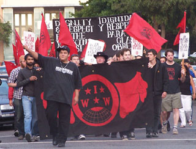

Reunion of the Union - Over 100 Wobblies and Supporters Rally for Shattuck Workers
Submitted on Sat, 09/09/2006 - 1:08am
By Dean Dempsey - Bay Area GMB
In the largest turnout to date, the Bay Area Industrial Workers of the World rallied outside Landmark’s Shattuck Cinemas in Berkeley, CA, in support of the theater’s workers. The rally occurred one day before the IWW General Assembly, allowing the opportunity for fellow workers from all parts of North America to participate, putting our number at about 125 Wobblies and union-supporters.
The rally began as a march, as over 60 Wobblies marched from the Bay Area GMB office, to the Shattuck Cinemas half a mile away. As we approached the theater, everyone began to sing “Solidarity Forever,” and then took a place outside the theater to display banners and picket signs.
Among the people present were several workers from the Starbucks Union in New York City. These fellow workers were quick to show their solidarity with the rallying employees at Shattuck Cinemas, and as Starbucks organizer, Daniel Gross, said, “Starbucks workers were so inspired by the Shattuck victory…so for us, it was such a privilege and honor to take a stand with the Shattuck workers and to be with them in solidarity, and also to pledge to do whatever we can to make sure they succeed, and that we succeed as a class.”
Landmark employees were equally supportive of the New York Baristas. Shattuck Cinema employee, Ilya Gershov, felt “impressed by the rally [and] that our fellow Wobblies…came across the country to show support for our cause.”
The rally served not only as space where demands could be said, nor just a time where worker’s struggles could be publicized, but also as an occasion for fellow workers to meet one another, sharing experience and encouraging each other through ideas and support. Fellow workers from Canada, WA, IL, OR, PA, MA, WI and many other parts of the continent, were able to network, and meet their comrades face to face.
Workers from Bay Area IWW shops, Buyback Recycling (IU670) and Stone Mountain & Daughter Fabrics (IU660), also joined the rally, demonstrating their solidarity not only for their union, but for other fellow workers who demanded more for themselves on and off the job.
Shattuck Cinema organizer, Harjit Gill, saw the rally as “inspiring, with so many people there to be supportive of the drive. The workers felt very supported, and were really in shock by all the people who turned out for them.” Gill continues, “[I remember] in the earlier rallies, workers were in even greater disbelief that other people would support them, but I told them this is called solidarity. An individual doesn’t need to know who you are to give support. That’s what this one word means.”
At mid-rally, we then convened for a second march, circling once around the block, as people shouted from car and building windows their support for the workers at Shattuck Cinemas. Even an employee at a nearby theater smiled and clapped as we passed.
Gross adds, “It was wonderful seeing all the IWW flags waving in the air and seeing the Starbucks and Shattuck workers side by side. We sent a strong message…that the Industrial Workers of the World is waiting with open arms for Baristas [and Theater Workers] interested in doing better than a poverty wage.”
The support given to the Shattuck Cinema workers comes as contract negotiations are full underway. Although wages and hours are being discussed, two specific topics are the workers uniforms and basic right to a chair for the ticket collector, all of which workers are determined to gain in their interest.
Recently, in a possible effort to undermine the union-efforts, workers were offered raises nation wide, the first of any such wage increases at Shattuck Cinemas in about 3 years. These were about .70 cents up to $1.00 raises. But both the union and the workers are optimistic about this action, because workers are being given a higher pay but are still committed in organizing to reclaim what is rightfully theirs.
The support, as demonstrated in the rally, is going strong, and equally so, the will and enthusiasm of the workers at Shattuck Cinemas. Gershov, says, “I share the feeling with all my fellow Wobblies at the theater that [one day] people will walk by the Shattuck theater and say, ‘those guys didn’t give,’ they’ll say, ‘they took on a giant and didn’t accept anything less than what workers deserve.’”